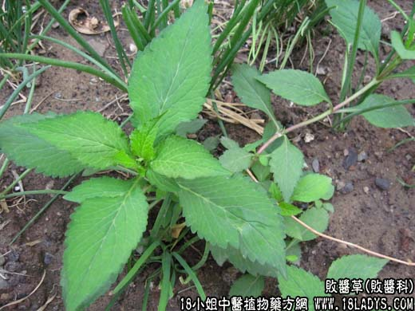

【中药概述】
败酱草为败酱科草本植物黄花败酱、白花败酱的全草。辛、苦，微寒。归胃、大肠、肝经。
1.清热解毒：用于肠痈、肺痈及疮痈肿毒等，可与红藤，金银花，蒲公英，牡丹皮等配伍，如<肠痈方>、(金匮要略<薏以附子败酱散>)。
2.祛瘀止痛：用于血热瘀滞的腹痛，单用本品水煎服。有清热活血止痛之效。
【药效鉴别】
败酱草与鱼腥草作用相近，相配可增强清热解毒消痈排脓作用，但败酱草尚有活血行瘀之功。
【临证应用】
败酱草，双花，地丁，公英，大黄，马齿苋各15g，水煎服。治阑尾脓肿。
【药理作用】
现代又用于急性黄疸型肝炎、肝脓疡、子宫内膜炎、卵巢囊肿等。
【化学成分】
黄花败酱含挥发油，主要为败酱烯、异败酱烯。白花败酱含白花败酱甙、马钱甙等。
【用量用法】
10——30g，水煎服，或入剂。外用适量。捣烂外敷。
【使用注意】
凡气虚、血虚而无实热瘀滞者忌。
以上为败酱草(胭脂麻)【败酱科】，如果您想了解更多关于败酱草，请往下看。